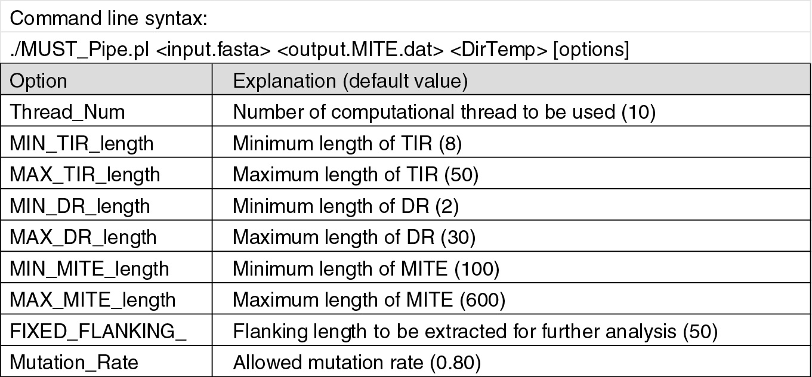
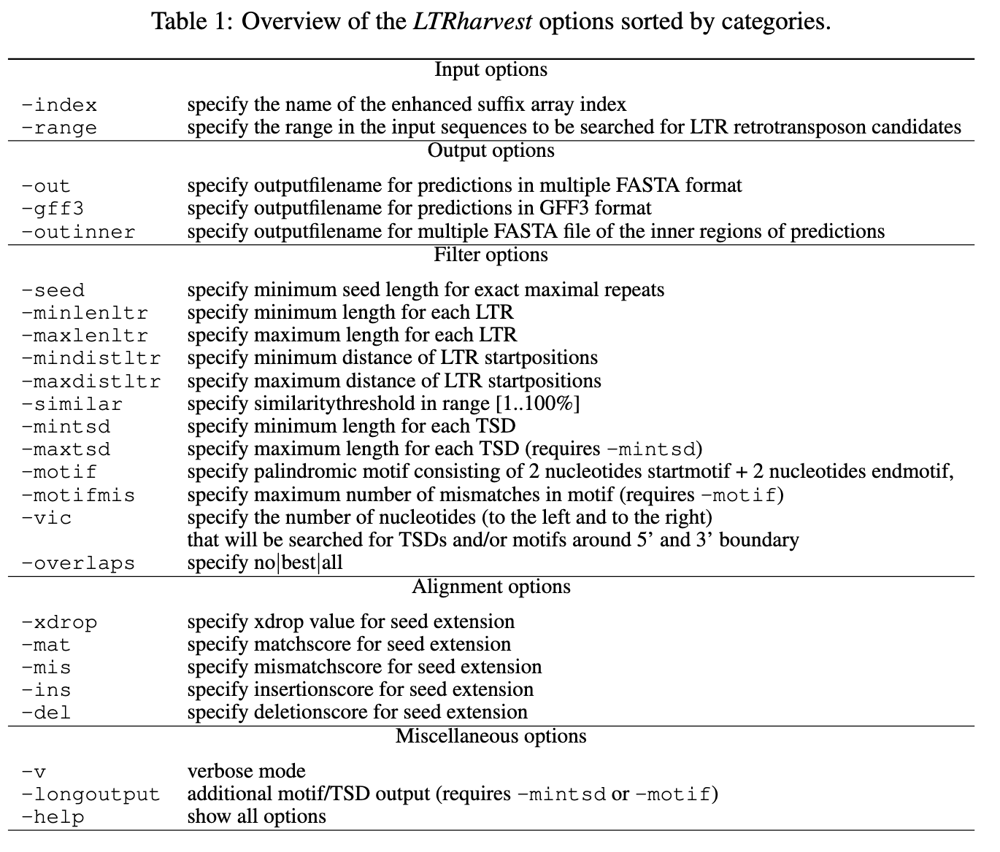

Step 2.2 of overall annotation workflow¶
- Step 2.1: a2_1_anno_TEUlt
previous step:
IMPORTANT
- these local annotations should be run with the sequence.fasta (and sequence_rc.fasta if needed) file that was generated during the TEUlt setup process (step 1) to ensure that the chromosome naming is the same across all files
- if the chromosome naming is inconsistent, the TEUlt pipeline (step 5) will not run correctly
Local/manual annotations¶
Approximate runtimes¶
| program | time | computer |
|---|---|---|
| MUST | ~100 min | Talapas |
| LTR Finder parallel | ~5 min | Talapas |
| LTR Harvest | ~90 min | local |
| LTR Retriever | ? | Talapas |
| SINE Finder | ~5 min | Talapas |
- LTR Harvest runtimes are really variable- runs in like 10 seconds on Libuda CB but literally took and hour and a half for the Kim CB, and won't even run for nonTGCA motifs on Kim CB (according to the paper, the program run time is really dependent on how repetitive the genome is)
MUST¶
- MUST download link
- yes, this looks sketchy
- it will be ok
- use cmd-F and search for MUST, download the tar.gz file titled "MUST.r2-4-002.Release.tar.gz"
- if for some reason there is a more recent version, just try to get the version above because who knows what the new one looks like
- this program is a hellhole of perl scripts so sorry
In & Out¶
| INPUT | genome in fasta format |
| OUTPUT | MITE annotations (result.txt) |
- use genome file that was made during TEUlt setup (you may have to download from Talapas or copy to new directory, but DO NOT MOVE THE ORIGINAL FILE OUT OF THE TE ULT DIRECTORY)
- this is how the MUST directory needs to be structured ```
genome_MUST_dir |- MUST_talapas_script.sh |- MUST.r2-4-002.Release/ # unzipped MUST tar.gz | |- sequence.fasta | |- MUST_Pipe.pl | |- temp/
Dependencies¶
- NCBI BLAST version 2.2.11 (version used for publication)
- BLAT version 3.5 (version used for publication)
- "open-3.3.0” version of RepeatMasker with the revision 1.250 (version used for publication)
- languages:
- Perl
- C/C++
- Bash
- BioPerl
Running MUST¶
- run on Talapas, this will take a couple hours so best to not run locally
- example script for running on Talapas in code folder scripts/must_talapas.sh
- MUST is completely command line (no GUI)
- use the perl script (in scripts/MUST_Pipe.md) and run in shell using some form of the command below:
./MUST_Pipe.pl <genome.fasta> <result.txt> <temp> [OPTIONS]
- need to run from directory that came from unzipping the MUST.tar.gz file where the MUST_Pipe.pl script is located
- if you name the output file result.txt when you run MUST, won't have to rename the file later for integration into TEUlt (a3_anno_combine)
- temp is the temporary directory in which intermediary files will be stored as MUST is running
- this directory needs to be created prior to running MUST and located within directory that holds MUST_Pipe.pl script
command line syntax¶
|  |
|---|
| MUST CLI syntax and options (copied over from https://www.degruyter.com/document/doi/10.1515/jib-2017-0029/html?lang=en |
LTR Finder¶
LTR Finder parallel¶
What is it?¶
- perl wrapper for LTR Finder
- splits chromosomes into 1Mb segments and then runs LTR Finder on all segments in parallel
- uses timeout mechanism so that complicated regions are further split if LTR Finder is taking too long on one segment
Why use it?¶
- the original LTR Finder runs sequentially, so is very slow on large genomes
- LTR Finder frequently used on plant genomes, which are large and also contain massive amounts of LTRs and transposons overall, meaning that this program took forever (1.16 years for the 14.5 Gb bread wheat genome)
- parallelization of LTR Finder resulted in up to 8500X faster identification of LTRs
In & Out¶
| INPUT | genome in fasta format |
| OUTPUT | uncleaned/unfiltered LTR annotations to input into LTR Retriever |
- use genome file that was made during TEUlt setup (you may have to download from Talapas or copy to new directory, but DO NOT MOVE THE ORIGINAL FILE OUT OF THE TE ULT DIRECTORY)
Running LTR Finder parallel¶
- run on Talapas
- example script for running on Talapas in code folder scripts/ltrfinder_parallel_talapas.sh
perl LTR_FINDER_parallel -harvest_out -seq sequence.fasta
LTR Harvest¶
- run locally through genometools package in specific conda env
- GenomeTools
# create conda environment conda create --name envname # add conda channels conda config --add channels defaults conda config --add channels bioconda conda config --add channels conda-forge conda config --set channel_priority strict # install genome tools conda install -n envname genometools-genometools
- GenomeTools
In & Out¶
| INPUT | genome in fasta format |
| OUTPUT | uncleaned/unfiltered LTR annotations to input into LTR Retriever |
- use genome file that was made during TEUlt setup (you may have to download from Talapas or copy to new directory, but DO NOT MOVE THE ORIGINAL FILE OUT OF THE TE ULT DIRECTORY)
Dependencies¶
- genometools (conda package)
- genometools documentation
- how to install genometools
Running LTR Harvest¶
commands copied from https://github.com/oushujun/LTR_retriever#inputs 1. run gt suffixerator to create necessary indices - Suffixerator documentation
gt suffixerator -db sequence.fasta -indexname sequence.index -tis -suf -lcp -des -ssp -sds -dna
-
run gt ltrharvest to get ltr annotations in format needed for LTR Retriever
gt ltrharvest -index sequence.index -minlenltr 100 -maxlenltr 7000 -mintsd 4 -maxtsd 6 -motif TGCA -motifmis 1 -similar 85 -vic 10 -seed 20 -seqids yes -v > sequence.harvest.scn -
run gt ltrharvest to get non TGCA motif LTRs
gt ltrharvest -index sequence.index -minlenltr 100 -maxlenltr 7000 -mintsd 4 -maxtsd 6 -similar 85 -vic 10 -seed 20 -seqids yes -v > sequence.harvest.nonTGCA.scn
command line syntax¶

LTR Retriever¶
- LTR Retriever paper link
- LTR Retriever download link
- conda download! very easy to follow installation directions on github
In & Out¶
| INPUT | genome in fasta format, LTR RT candidates (from any combination of LTR Finder, LTRHarvest, LTR_STRUC, MGEScan 3.0.0, and LtrDetector) |
| OUTPUT | filtered and parsed LTR annotations |
- use genome file that was made during TEUlt setup (you may have to download from Talapas or copy to new directory, but DO NOT MOVE THE ORIGINAL FILE OUT OF THE TE ULT DIRECTORY)
Dependencies¶
- TRF
- BLAST+
- BLAST or CD-HIT
- HMMER
- RepeatMasker
getting LTR RT candidates¶
- it is sufficient to use only results from LTR Finder and LTR Harvest (pro tip: the output files from these two LTR RT candidate finders do not have to be altered for input into LTR Retriever!)
- create a new directory (calling this ltrret_dir for the rest of this) (doesn't really matter where this directory is located at this point) and copy over the following files:
- from LTR Harvest: sequence.fa.harvest.scn and sequence.fa.harvest.nonTGCA.scn (if you decide to create/use this file for the non TGCA motif option in LTR Retriever)
- from LTR Finder: sequence.fasta.finder.combine.scn
- genome file: sequence.fasta
- use command below to combine LTR Finder and LTR Harvest annotations into one file \
bash cat sequence.fa.harvest.scn sequence.fasta.finder.combine.scn > sequence.fa.rawLTR.scnor \bash cat sequence.fa.harvest.scn sequence.fa.harvest.nonTGCA.scn sequence.fasta.finder.combine.scn > sequence.fa.rawLTR.scn - upload ltrret_dir directory to Talapas
- upload the LTR Retriever code folder to ltrret_dir (or just clone the git repo into ltrret_dir)
- use command below to run LTR Retriever
- example script for running on Talapas in code folder (scripts/ltrret_talapas.sh)
- need to make sure that ug has rwx permissions for the LTR_Retriever executable in the LTR Retriever code folder before submitting batch job (it won't work to just give rwx to the LTR Retriever code directory, you've gotta specify the executable directly or else it gets mad and says Permission Denied)
chmod ug+rwx ~/LTR_retriever/LTR_retriever
/home/calbers/libudalab/strain/LTR_retriever/LTR_retriever -genome sequence.fasta -inharvest genome.fa.rawLTR.scn -verbose -u .0000002808 > sequence_LTRRetriever.out
SINE Finder¶
- the program is located in the supplemental material of the paper (the alternate download link listed (german website) doesn't work, but you can try :))
- kind of tricky to find:
- download the supp material
- actual python script is Supp Data File 1 (txt file)
- make a copy or resave this .txt file as a .py file (change file extension) so that it will be recognized as a python script
In & Out¶
| INPUT | genome in fasta format (accepts .fas, .FASTA, and .mfa file extensions) |
| OUTPUT | SINE sequences in fasta format |
- use genome file that was made during TEUlt setup (you may have to download from Talapas or copy to new directory, but DO NOT MOVE THE ORIGINAL FILE OUT OF THE TE ULT DIRECTORY)
Dependencies¶
- Python 2.7
IMPORTANT NOTES¶
- NEED TO RUN CHUNK-WISE
-
hey, did you run this chunk-wise?
- this is why this program must be run manually- when run through the conda wrapper in Transposon Ultimate, the python recursive memory limit is exceeded for large genomes because the conda wrapper runs SINE Finder in seqwise mode, resulting in the program stopping when the memory limit is reached and subsequently incomplete annotations
- USE EXTENSION: $ -T 'chunkwise'
-
need to run with BOTH sequence.fasta and sequence_rc.fasta because SINE finder only annotates a single strand
- use genome files that were made during TEUlt setup (you may have to download from Talapas or copy to new directory, but DO NOT MOVE THE ORIGINAL FILES OUT OF THE TE ULT DIRECTORY)
Running SINE Finder¶
- run in Talapas
- specifically works with python2.7 (not later versions- does some whack stuff and tries to run interactively but then immediately crashes out before any arguments are passed to the prompts, (which is very possibly user error on my part, but this was just the silly way i got it to work) so long story short, have to specify v2.7)
Steps¶
-
go to directory that has sequence.fasta, sequence_rc.fasta and sine_finder.py
cd sine/finder/directory -
run command using python2.7
python2.7 sine_finder.py -T "chunkwise" -V -f both sequence.fasta > kim_sinefinder.out
command line syntax¶
sine_finder [options] <fastafile_name>
OPTIONS:
-h (help:) display this message.
-d (description:) display a short description of the
program.
-v (version:) print version number.
EVALUATION PARAMETERS:
-T (seqwise|chunkwise)
(run type:) the way how infiles are processed (default:
seqwise).
'seqwise': each sequence is loaded and searched for patterns.
For large sequences 'chunkwise' is the better choice.
'chunkwise': only fragments (chunks) of the sequence are
loaded and processed. The size is defined by option
-C. To ensure that matches do not get lost by sequence
splitting an overlap should be specified (option -O).
-t <integer>
TSD mismatch tolerance (default:2).
-w <integer>
word size TSD seed starts search with (default:5).
-p <integer>
penalty for a nucleotide mismatch in TSD search (default:
1).
-s <integer>
TSD score cutoff (default:10).
-o (F|R|FR)
direction of TSD search, allowed orientation (default:F).
(only chunkwise processing:)
-C <integer>
(chunksize:) size of each fragment loaded and processed
individually. Use only when -T is set to chunkwise (default:
100000).
-O <integer>
(overlap:) overlap of fragments treated by chunkwise processing.
Use only when -T is set to chunkwise (default:8000).
OTHER OPTIONS:
-f (fasta|csv|both)
(file type:) file type result is written to (default:fasta).
-V (verbose:) display program call.